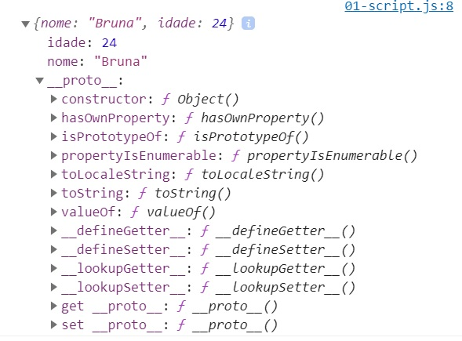
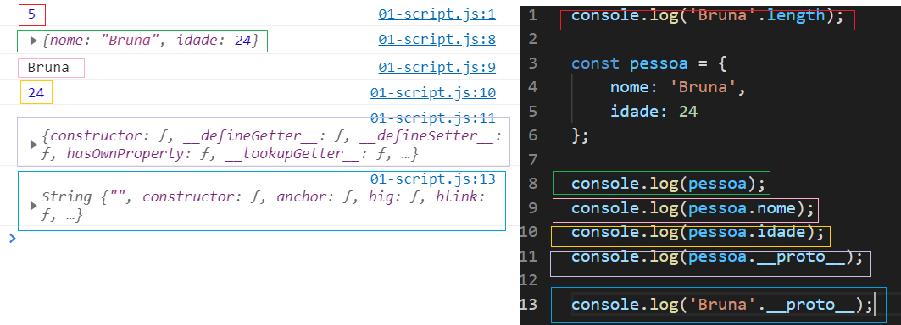

Todos os scripts dos arquivos estão no vs code / execução no console
O JavaScript é uma linguagem baseada em prototipos e possui uma cadeia de prototipos.
A maioria dos objetos que criamos já tem um objeto pai, ou seja, o dado criado herda todas propriedades de __proto__
 